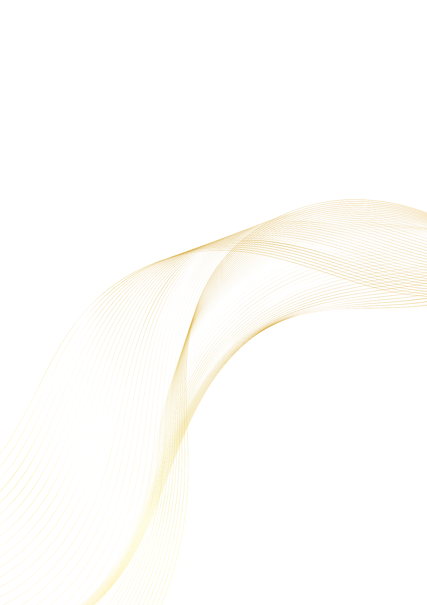

Я психолог, работающий в гештальт-подходе.
Для меня терапия - это прежде всего пространство, где человек может быть настоящим. Не собранным, не правильным, не удобным и не обязательно сильным.
Ко мне можно прийти с болью, слезами, страхом, злостью, стыдом, растерянностью, противоречиями и историями, о которых трудно рассказывать даже самому себе. В жизни каждого человека может происходить очень разное, и мне важно, чтобы рядом со мной ему не приходилось дополнительно защищаться от осуждения или оценки.
Я умею быть рядом с сильными чувствами и тяжёлыми историями. Мне не нужно срочно убрать слёзы, успокоить человека или найти правильное объяснение его переживаниям. Я могу оставаться рядом, когда больно, страшно, хаотично или кажется, что происходящее невозможно выдержать.
Я очень бережно отношусь к истории каждого клиента. У меня нет задачи оценивать человека, искать в нём «правильное» и «неправильное» или заставлять его соответствовать каким-либо представлениям о том, как он должен жить.
При этом бережность для меня - это не пассивность. Я могу задавать сложные вопросы, обращать внимание на противоречия и то, что происходит между нами прямо сейчас. Но делаю это без давления и без позиции «я знаю лучше».
Мне важно, чтобы в терапии человек постепенно мог почувствовать:
«Здесь со мной ничего не нужно изображать. Я могу принести сюда всё, что со мной происходит, и меня не будут за это стыдить или осуждать».
Я воспринимаю терапевтический контакт как совместную работу. Я не проживаю жизнь клиента вместо него и не даю готовых рецептов. Я остаюсь рядом, помогаю выдерживать и исследовать то, с чем человек сталкивается, и вместе с ним ищу то, что может привести к изменениям.
Я за терапию, в которой достаточно места и для боли, и для силы, и для противоречий, и для человеческой уязвимости. Даже если в какой-то момент кажется, что весь мир против моего клиента, в терапевтическом кабинете он не останется один. Я буду на его стороне - не в смысле безусловного одобрения любых его поступков, а в смысле безусловной человеческой поддержки, уважения и готовности вместе разобраться в том, что с ним происходит.
Мне важно, чтобы человек знал: я не стану ещё одним человеком, от которого ему нужно защищаться. Я могу не соглашаться, задавать неудобные вопросы, обращать внимание на противоречия и исследовать последствия его решений - но при этом не перестану быть рядом с ним и не превращу терапию в суд над его жизнью.
Сильный и эмоционально выдерживающий терапевт, способный работать с тяжёлыми историями, кризисными переживаниями и сильными эмоциями.
Бережное отношение к индивидуальной истории каждого человека. Не оцениваю и не занимаю позицию «я знаю, как вам правильно жить».
Клиенту не нужно быть удобным, сильным или правильным - можно говорить о том, что трудно говорить.
Основа работы - гештальт-подход, осознавание, контакт и исследование опыта клиента здесь-и-сейчас.
Я постоянно продолжаю профессиональное обучение: прохожу специализации, супервизии и международные семинары в Харьковском институте гештальта и психодрамы (ХИГИП), чтобы моя работа с клиентами опиралась на актуальные знания и подтверждённую квалификацию. Также я действительный член Национальной психологической ассоциации Украины.
Многолетняя практика работы с тревогой, отношениями, самооценкой и жизненными кризисами.
Каждая сессия строится вокруг именно вашего запроса, темпа и потребностей - без шаблонов.
Конфиденциальность, принятие без осуждения и атмосфера, в которой можно быть искренним.
Помогаю с тревожностью, выгоранием, отношениями, потерями и поиском опоры в себе.